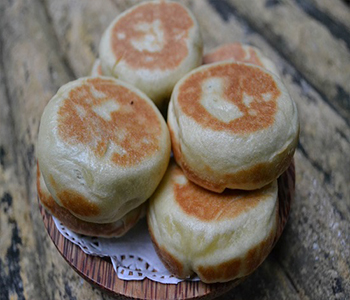

Bahan Kulit:
- 300 gr terigu
- 2 sdm mentega
- 2 sdt ragi instan
- 50 gr gula castor
- sejumput garam
- 50 ml air hangat
Bahan Isi:
- 100 gr kacang hijau
- 100 gr gula merah
- 50 gr gula pasir
- 2 lbr daun pandan
- sejumput garam
- air untuk merebus
Cara Membuat:
- Langkah pertama rebus kacang hijau bersama daun pandan hingga empuk
- Setelah empuk, tambahkan gula merah, gula pasir, garam.
- Aduk, hingga masak dan kacang hijau menjadi kental dan garing
- Tunggu hingga dingin. Setelah dingin, buat bola bola..
- Selanjutnya buat adonan kulit. Aduk semua bahan kecuali air. Beri air sedikit sedikit, hingga adonan kalis dan tidak menempel di tangan
- Diamkan kurleb 45 menit/ hingga adonan mengembang 2x lipat
- Setelah adonan mengembang 2xlipat, bagi adonan menjadi 24-30 bagian
- Ambil satu bagian, pipihkan, isi dengan bola kacang, bulatkan, lalu pipihkan sedikit. Lakukan terus hingga adonan habis. Lalu diamkan kembali kurleb 10 menit
- Siapkan teflon yg ada tutupnya (bisa wajan atau panci), panaskan, beri sedikit olesan margarin. Lalu masak adonan tadi kurleb 5 menit dengan api kecil. Setelah 5 menit, balikkan, masak lagi kurleb 5 menit. Angkat